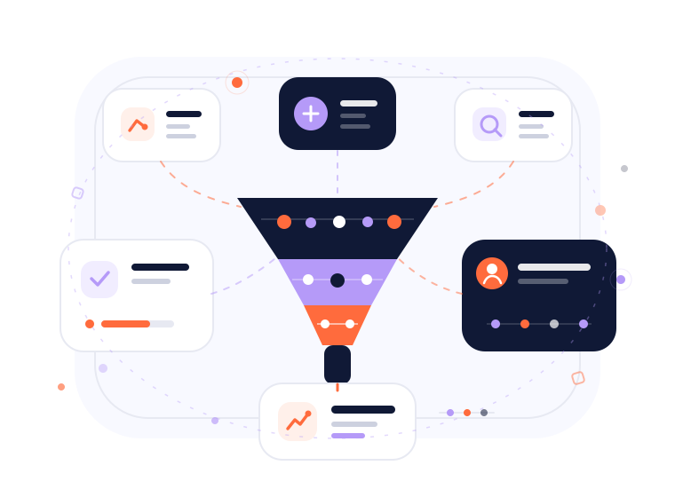

Capture the conversions that matter
Track the actions that represent meaningful progress toward a lead, sale or customer outcome.
- Forms
- Calls
- Purchases
- Registrations
- Conversion values
- Revenue
Conversion tracking, analytics, CRM data and automation that connect advertising activity with real business outcomes.
Track real conversion outcomes, connect sales data and automate repetitive performance monitoring.
Advertising platforms only see the signals you send back. Better conversion, sales and revenue data make optimization more useful and reporting more reliable.
Tracking is strongest when advertising, website activity, CRM outcomes and reporting share the same business logic.
Track the actions that represent meaningful progress toward a lead, sale or customer outcome.
CRM feedback adds context after the initial conversion so campaigns can understand lead quality and value.

Reporting should highlight useful performance changes instead of overwhelming teams with raw numbers.
Automation can monitor campaign performance, surface anomalies and move useful data between systems.
Reliable tracking makes it easier to understand what advertising is actually producing for the business.
Measure forms, purchases, calls and other valuable conversion actions.
Connect lead quality and sales outcomes with the campaigns that created them.
Surface meaningful changes in spend, conversions and campaign behaviour faster.
Reduce repetitive reporting and data-handling tasks while keeping decisions under control.
Advertising becomes more useful when platforms receive information about what actually happens after the initial conversion.
The quality of optimization depends on the quality of the conversion signals being sent back.
Review My TrackingThe first step is understanding what is currently measured, where data comes from and which outcomes matter most.
Request a Tracking AuditReview conversion tracking, CRM feedback and performance reporting before making bigger campaign decisions.